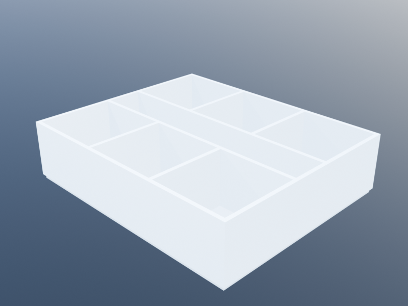

Isenberg Bottom-Up
This tutorial builds the Isenberg School of Management Business Innovation Hub — the arc-shaped BIG/Goody Clancy building whose "domino effect" copper facade won the UNESCO Prix Versailles 2020 — using KhepriBase's Space-first Level-1 API.
A rendered stand-in of the composed plan:

The same building is constructed by progressively declaring every room as a first-classSpace, composing them into a Layout, and letting build(layout) emit walls, doors, windows, and slabs.The companion tutorial, Isenberg Top-Down, builds the exact same building from a polar_envelope plus radial and angular subdivision operators. Comparing the two side-by-side is the cleanest illustration of Level-1 vs Level-2 modelling.
The shape in one picture
The Isenberg footprint is an arc-shaped band that sweeps from angle 0 to 3π/2 around a courtyard:
- Semicircular zone (
0..π): both the inner and outer boundaries are concentric circular arcs at radii10m and25m. - Projection zone (
π..3π/2): the outer boundary leaves the circle and extends along a tangent — we'll simplify that to a polar sector here, accepting a square-ish outer edge in the plan. - Three storeys at 3 m each; the ground floor is kept open in the projection zone (entrance lobby).
- Each upper floor is divided into an inner band of rooms, a circular corridor, and an outer band of rooms.
The key primitive is polar_sector_path: given a centre, inner and outer radii, and two angles, it returns a ClosedPath discretised into a polygon. Every Space we create in this tutorial is bounded by one of those polygons.
Parameters
Collect the numbers that drive the building. Changing any of these regenerates the model in place.
using KhepriBase
center = u0()
r_inner = 10.0
r_outer = 25.0
arc_start = 0.0
projection = π # where the projection (open lobby) starts
arc_end = 3π/2 # full 270° sweep
n_rooms = 18 # rooms per band per floor (semicircular portion)
corridor_span = 2.0 # radial thickness of the corridor band, metres
floor_h = 3.0 # floor-to-floor
n_floors = 3
n_arc = 0 # 0 = arc-native; >0 = polygon discretisationThe inner band covers roughly 40% of the radial span, the corridor 10%, and the outer band 50%. We compute those radii up front so every room, wall, and corridor arc shares the same split:
# Inner/outer band radii with a 2 m corridor centred at the midpoint
r_mid = (r_inner + r_outer) / 2
r_corridor_in = r_mid - corridor_span / 2
r_corridor_out = r_mid + corridor_span / 2The floor-plate function
Each upper floor has the same room layout. Pull it into a function that mutates a Layout in place, so we can call it once per storey:
function add_upper_floor!(plan, theta_start, theta_end, n_rooms;
r_inner=r_inner, r_outer=r_outer,
r_corridor_in=r_corridor_in,
r_corridor_out=r_corridor_out,
n_arc=n_arc)
dθ = (theta_end - theta_start) / n_rooms
# Inner band of rooms
inner_rooms = [
add_space(plan,
"inner_$i",
polar_sector_path(center, r_inner, r_corridor_in,
theta_start + (i - 1) * dθ,
theta_start + i * dθ;
n_arc=n_arc);
kind = :office)
for i in 1:n_rooms]
# One continuous corridor for the whole sweep
corridor = add_space(plan, "corridor",
polar_sector_path(center, r_corridor_in, r_corridor_out,
theta_start, theta_end; n_arc=n_arc * n_rooms);
kind = :corridor)
# Outer band of rooms
outer_rooms = [
add_space(plan,
"outer_$i",
polar_sector_path(center, r_corridor_out, r_outer,
theta_start + (i - 1) * dθ,
theta_start + i * dθ;
n_arc=n_arc);
kind = :office)
for i in 1:n_rooms]
# Doors: every room onto the corridor
for r in inner_rooms
add_door(plan, r, corridor)
end
for r in outer_rooms
add_door(plan, r, corridor)
end
# One exterior window per outer room, centred on its outer facade
for (i, r) in enumerate(outer_rooms)
θ_mid = theta_start + (i - 0.5) * dθ
add_window(plan, r, :exterior,
loc = center + vpol(r_outer, θ_mid),
family = window_family(width=1.4, height=1.5))
end
(inner_rooms, corridor, outer_rooms)
endTwo things to notice:
- Corner
n_arcscaling. The individual room arcs are discretised withn_arc = 10per room; the corridor usesn_arc * n_roomssamples across its full sweep so the single long arc stays smooth. - Each
add_spacecall creates oneSpaceon the layout and returns it — we can feed those handles straight intoadd_door/add_window.
The ground floor: open lobby
On the ground floor, the projection zone (π..3π/2) is one large entrance hall; only the semicircular half gets the upper-floor room layout. We reuse the function with theta_end = projection, then drop a single lobby space into the remaining wedge and add the front door on the outer facade.
function add_ground_floor!(plan)
inner_rooms, corridor, outer_rooms =
add_upper_floor!(plan, arc_start, projection, n_rooms)
lobby = add_space(plan, "lobby",
polar_sector_path(center, r_inner, r_outer,
projection, arc_end; n_arc=n_arc * 6);
kind = :lobby)
# Front door at the far end of the projection, on the outer edge
θ_door = (projection + arc_end) / 2
add_door(plan, lobby, :exterior,
loc = center + vpol(r_outer, θ_door))
# Big atrium windows along the lobby's outer facade
for t in (0.25, 0.5, 0.75)
θ = projection + t * (arc_end - projection)
add_window(plan, lobby, :exterior,
loc = center + vpol(r_outer, θ),
family = window_family(width=1.8, height=2.4))
end
(inner_rooms, corridor, outer_rooms, lobby)
endAssembling the building
floor_plan creates a single-storey Layout; add_storey! stacks additional storeys on top. We call add_ground_floor! for storey 1 and add_upper_floor! for each storey above it.
plan = floor_plan(
height = floor_h,
wall_family = wall_family(thickness = 0.2),
slab_family = slab_family(thickness = 0.4))
add_ground_floor!(plan)
for _ in 2:n_floors
add_storey!(plan; height = floor_h)
add_upper_floor!(plan, arc_start, arc_end, n_rooms)
endAt this point plan is a multi-storey Layout with (2 n_rooms + 1) × (n_floors - 1) + (2 n_rooms + 2) spaces — one corridor per floor, one inner and outer room per angular wedge per floor, plus the ground-floor lobby and its front door.
walls, doors, windows, slabs = build(plan)build compiles every storey through the wall-graph chain resolver (so shared curved edges are merged into single walls with mitred corners at the radial partitions) and emits:
- one wall per shared edge, classified as interior or exterior;
- one door per
add_doorcall; - one window per
add_windowcall, at the default 0.9 m sill; - one slab per room per storey, plus a roof at the top.
Rendering
Any Khepri backend can render the result. For a quick textual summary:
realize(plan, TextBackend())For CAD:
using KhepriAutoCAD; autocad()
realize(plan)What this approach is good at
- Imperative control. Every room is a named handle; every door ties two of those handles together by identity. Adding an exit, a special-purpose mechanical room, or a localised override is one extra line.
- Heterogeneous geometry. Non-uniform rooms, off-grid carves, mid-wing bays that don't align to the circular partition — all drop in as one more
add_spacecall. - No tree to walk.
builditerates the flat list of storeys and spaces; there's nothing to re-parse when you change a room.
What the top-down approach does better
- Uniform rooms from one declaration. The inner and outer bands in this tutorial are built by two nearly identical comprehensions. The top-down version expresses "split the envelope radially into three bands, then partition each band into
n_roomswedges" as a single pipeline of subdivision operators — see the companion Isenberg Top-Down tutorial.
Exercises
Asymmetric rooms. Change the projection to
5π/4and regenerate. The semicircular span shrinks and the lobby grows.Double-loaded corridor with offices only on the outer band. Drop the
inner_roomscomprehension and widenr_corridor_inso the corridor reaches the inner facade. Add a courtyard-facing window to each outer room's angular mid-line.Fire-stair. Inject a stair space at
(θ = 5π/4, r = r_corridor_in)on every floor by adding a:stairspace with a small angular width and callingadd_door(plan, stair, :exterior, loc=…)to pierce the outer facade.